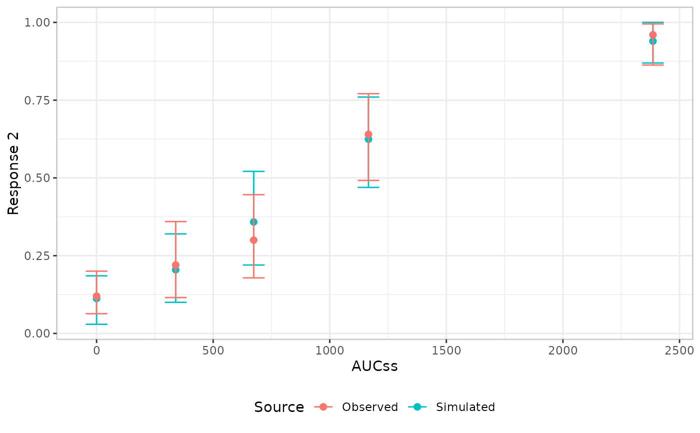

Create an er_vpc specification for a visual predictive check.
Build the plot by adding an observed layer and a simulated layer,
and render with plot()/print() or er_vpc_build().
Usage
er_vpc(
data,
exposure,
response,
response_type = "auto",
plot_by = NULL,
n_bins = 4,
stratify_by = NULL,
n_strata = 4,
conf_level = 0.95,
probs = c(0.1, 0.5, 0.9)
)Arguments
- data
Data frame or tibble containing the observed data.
- exposure
Exposure variable (one variable, unquoted).
- response
Response variable (one variable, unquoted).
- response_type
One of
"auto","binary","continuous", or"count".- plot_by
Variable (unquoted) plotted on the x-axis and used to bin/group the observed vs. simulated comparison. Defaults to
exposure. A numeric variable is split inton_binsquantile bins (placebo, i.e.0, kept in its own bin whenplot_byis the exposure variable itself); a categorical variable is used as-is, with no binning.- n_bins
Number of quantile bins, when
plot_byis numeric.- stratify_by
Optional variable (unquoted) splitting the VPC into one facet panel per level, via
ggplot2::facet_wrap(). A categorical variable is used as-is; a numeric variable is automatically split inton_strataquantile bins (placebo, i.e.0, kept in its own bin whenstratify_byis the exposure variable itself), with a message reporting that this happened. Must resolve to a different variable thanplot_by. Defaults toNULL(no faceting, a single panel, matching prior behaviour).- n_strata
Number of quantile bins, when
stratify_byis numeric. Ignored whenstratify_byisNULLor categorical.- conf_level
Confidence level for both the observed- and simulated-side intervals. Must be strictly between 0 and 1.
- probs
Percentiles to compute for a percentile-based builder (e.g.
er_style_vpc_observed_quantile_line()/er_style_vpc_simulated_quantile_ribbon()/er_style_vpc_observed_quantile_errorbar()/er_style_vpc_simulated_quantile_errorbar(); ignored by the default adaptive mean/errorbar pair). Only computed for a continuous/count response.
Details
er_vpc_add_observed() bins the observed data and computes its
response summary; er_vpc_add_simulated() must be added afterwards,
since it reuses the observed layer's own binning decision so both
sides share identical bin boundaries. Both layers are singletons (a
second call replaces the previous one).
Unlike er_plot(), er_vpc() has no stratification concept and
always renders a single panel – see er_vpc_add_observed() for
plot_by, the (orthogonal) variable plotted on the x-axis and used
to bin/group the comparison. Whether plot_by is "continuous"
(numeric, quantile-binned) or "discrete" (used as-is) is
auto-detected from the column's type and stored on
object$group$type, mirroring how object$response$type records
the response's type.
Examples
if (requireNamespace("erglm", quietly = TRUE)) {
library(erglm)
mod <- erglm_model(ae2 ~ aucss + sex, erglm_data, family = binomial())
erglm_data |>
er_vpc(aucss, ae2, plot_by = aucss) |>
er_vpc_add_observed() |>
er_vpc_add_simulated(model = mod, seed = 9984) |>
plot()
}
